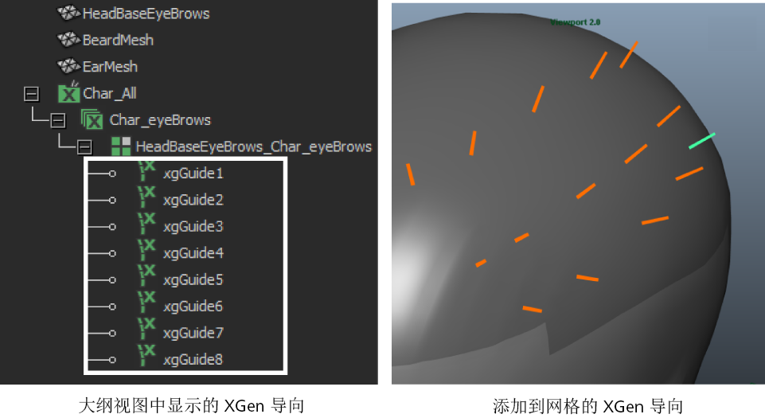

您可以使用 XGen 导向放置、定形和定向在多边形网格上生成的基本体。将导向作为基本体的代理版本，确定基本体生成的位置和显示方式。可以指定在创建新描述时要使用导向。生成可修饰样条线时，无法使用导向。请参见使用样条线基本体创建头发或毛发。
使用“添加或移动导向”(Add or Move Guides)工具  在多边形曲面的各个面上放置导向。您可以将任意数量的导向放置在每个面上以及多边形网格的任何区域，包括弯曲和倾斜的区域。默认情况下，导向将在场景视图中显示为橙色平坦曲线。请参见使用 XGen 导向定形样条线基本体
在多边形曲面的各个面上放置导向。您可以将任意数量的导向放置在每个面上以及多边形网格的任何区域，包括弯曲和倾斜的区域。默认情况下，导向将在场景视图中显示为橙色平坦曲线。请参见使用 XGen 导向定形样条线基本体

在“大纲视图”(Outliner)中，每个导向都由该图标 和唯一的 ID 表示。
将导向添加到网格曲面后，典型的工作流包括通过操纵导向的 CV 将导向定形。当预览描述时，生成的基本体受到导向形状的影响。
使用导向，可以执行以下操作：
- 操纵每个导向上的 CV。请参见使用 XGen 导向定形样条线基本体。
- 添加或删除导向。请参见使用 XGen 导向。
- 将导向移动到多边形曲面上的任意位置。请参见使用 XGen 导向手册。
- 将导向的形状复制到其他导向。请参见使用 XGen 导向。
工具(Utilities)选项卡中有许多可以用来定形和操纵导向的工具。